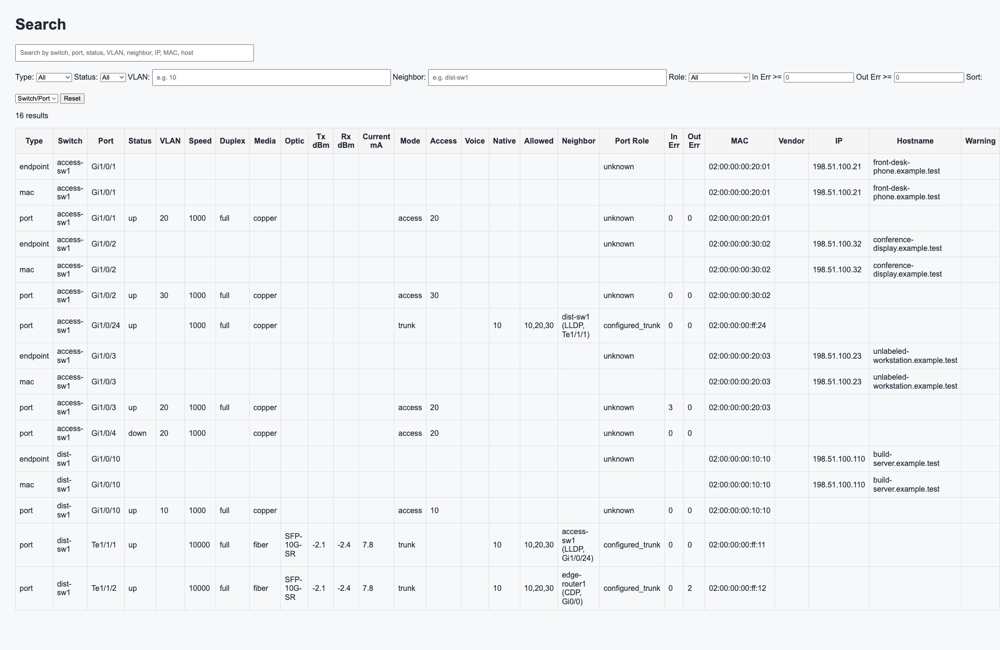
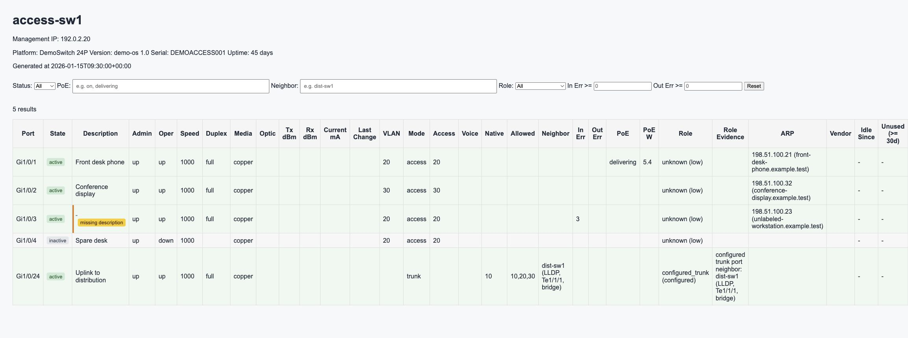

1. Features
Use overview, switch detail, all-ports, endpoints, VLAN, history, debug, and search pages from the generated static site.
switchmappy collects switch state, correlates endpoint data, renders HTML, and serves a local search UI for daily network operations.

switchmappy is based on Pete Siemsen's original Switchmap. The original Switchmap has a classic web UI and is no longer actively updated, but it remains a precise, complete, and fully functional tool. Many engineers have tried to carry the same idea forward in Ruby, Python, and other modern implementations. switchmappy is one more attempt to bring that great original back into active use for today's network operations.
python -m venv .venv
source .venv/bin/activate
pip install -e .[snmp,search]
cp site.yml.example site.yml
switchmap get-arp --source csv --csv arp.csv
switchmap build-html
switchmap serve-search --host 127.0.0.1 --port 8000Open http://127.0.0.1:8000/search/ after the server starts.
site.ymldestination_directory: output
idlesince_directory: idlesince
maclist_file: maclist.json
switches:
- name: access-sw1
management_ip: 192.0.2.20
collection_method: snmp
vendor: generic
snmp_version: 2c
community: public
trunk_ports: ["Gi1/0/24"]Use overview, switch detail, all-ports, endpoints, VLAN, history, debug, and search pages from the generated static site.
Define output paths, idle-state paths, SNMP timing, switches, routers, trunk ports, and optional OUI data.
Update idle state, import ARP and hostnames, build HTML, then serve the generated search UI.


switchmappyはスイッチ状態を収集し、エンドポイント情報を相関し、HTMLを生成し、日常運用向けのローカル検索UIを配信します。
switchmappy は Pete Siemsen 氏によるオリジナル版 Switchmap を元にしています。オリジナルのSwitchmapは、UIこそクラシカルで現在は活発に更新されていないものの、今でも非常に精巧で、完成度が高く、完全に機能するツールです。これまで多くの先人たちが、Ruby、Python、その他の現代的な実装で同じようなスイッチポートマッピングの仕組みを作ろうとしてきました。switchmappy もまた、その偉大なオリジナルを現代のネットワーク運用環境に甦らせようとする試みの一つです。
python -m venv .venv
source .venv/bin/activate
pip install -e .[snmp,search]
cp site.yml.example site.yml
switchmap get-arp --source csv --csv arp.csv
switchmap build-html
switchmap serve-search --host 127.0.0.1 --port 8000起動後に http://127.0.0.1:8000/search/ を開きます。
site.ymldestination_directory: output
idlesince_directory: idlesince
maclist_file: maclist.json
switches:
- name: access-sw1
management_ip: 192.0.2.20
collection_method: snmp
vendor: generic
snmp_version: 2c
community: public
trunk_ports: ["Gi1/0/24"]生成された静的サイトで、概要、スイッチ詳細、全ポート、エンドポイント、VLAN、履歴、デバッグ、検索を利用します。
出力先、idle状態、SNMPタイミング、スイッチ、ルータ、トランクポート、任意のOUIデータを定義します。
idle状態を更新し、ARPとホスト名を取り込み、HTMLを生成して検索UIを配信します。